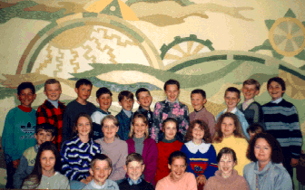

Return to Main Page
Return to Main Page
Date: Wed, 29 May 1996 12:03:47 +0300 (LDT)
From: Tatjana Balvociene
To: jj68@NYU.EDU
Subject: Re: Tree Project
Hello! We are Lithuanian and we live in the town
called Silute. We are the students of the high
school No.4, grade 5 (11 - 12 years old). With great
eagerness we join in the project concerning large
trees.
Outside our town there is a large oak. It is the
tallest oak in our area and it is called Pagryniu
oak. The name is derived from the village called
Pagryniai. Its length is 0.5 meter and its height
is 24 meters. In 1960's the oak was registered into
the list of to be protected in our area. In 1980's,
the oak was registered as nature monument of the
republic of Lithuania.
The other information and decription of the oak
will follow later.
Sincerely,
your Lithuanian friends.

Participants in the project,
pupils of form 5 (11-12 years old) and their teacher, Regina Jasudiene
The Legend about the oak
The old inhabitants of Silute's town tell that before the town was
founded, a little village was there. In that village, there was
a little cabin with its two masters: a father and his daughter. The
father planted an oak when his daughter was born.
Once a band of robbers besieged the village. Everyone was killed.
The robbers came to the cabin also. They killed the father and
were about to kill the daughter. She, though, grabbed a rock and
pierced herself. So she lay dead at the roots of the oak.
The time passed, and the oak grew into a huge tree. The cabin
however, was destroyed by time.
In the evenings, people hear a cry that comes from the oak.
They say it is the girl wailing for her dead father.
Antanas, 6 a cl.,12 years old
The Oak of the Devil
Long ago in a deep ooze there lived the Devil. He enjoyed food, and that
is why others called him ` Fatty`! Once, the Fatty ran out of food and stepped
into the god Perkunas garden. He picked up some vegetables and started
eating. The god Perkunas (Thunder) saw the Fatty and was enraged:
` How dare you to eat things from my garden!!`
The Thunder turned vegetables into a sack of acorns. The Fatty grabbed
the sack and ran away. The Thunder went after him, but in vain. As The
Devil ran, he last all his acorns. That is why Silute is full of oaks.
Gabriele, 6a cl., 12 y.old.
Return to Main Page